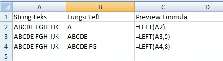
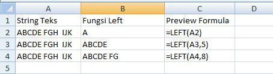
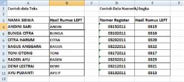
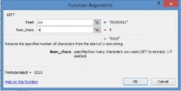

LEFT: mengambil karakter dari kiri
LEFT memotong sejumlah karakter dari awal teks, misalnya mengambil kode jenjang dari nomor induk.
Coba langsung di browserLembar kerja mini, kuis, dan tanda selesai.
Buka versi interaktif=LEFT(teks; [jumlah_karakter])
| teks | Teks atau sel sumber |
|---|---|
| jumlah_karakter | Banyak karakter dari kiri; kosong berarti 1 |
Langkah praktik
- Klik sel hasil.
- Ketik =LEFT( lalu klik sel sumber.
- Isi jumlah karakter, misalnya 3.
- Tekan Enter dan seret ke bawah.
Tips
Hasil LEFT selalu berupa teks, bahkan bila yang diambil angka. Bungkus dengan VALUE bila ingin menghitungnya.
Tangkapan layar praktik
4 gambar langkah demi langkah. Klik gambar untuk membuka ukuran penuh.



